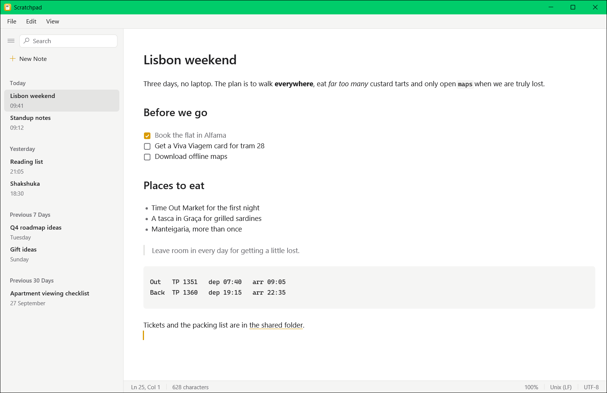
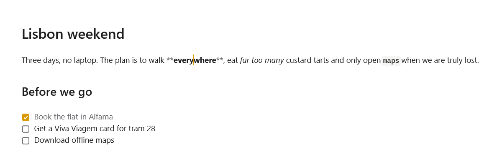
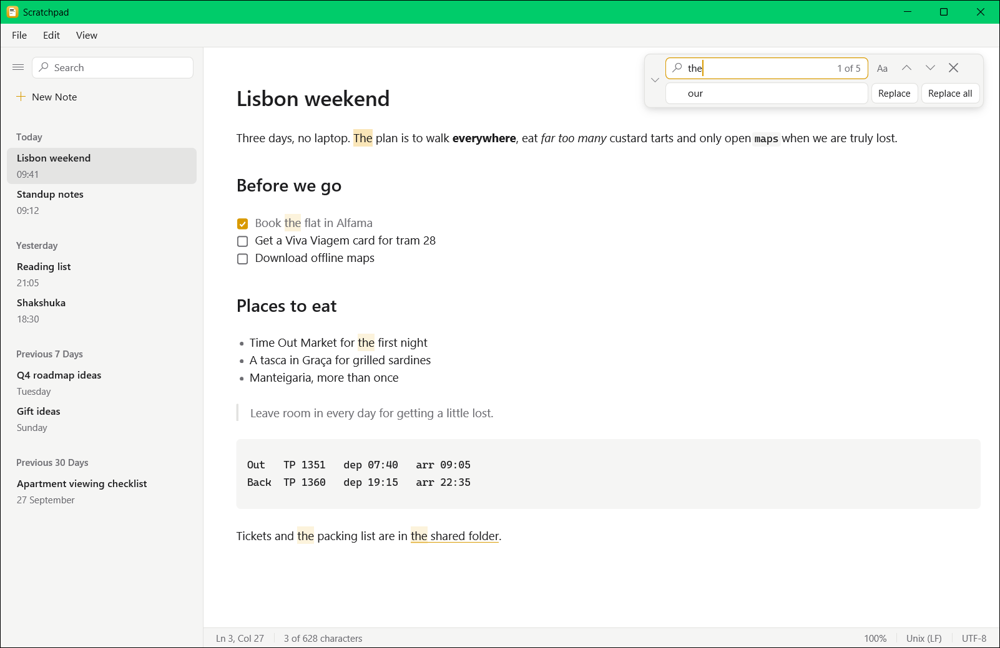
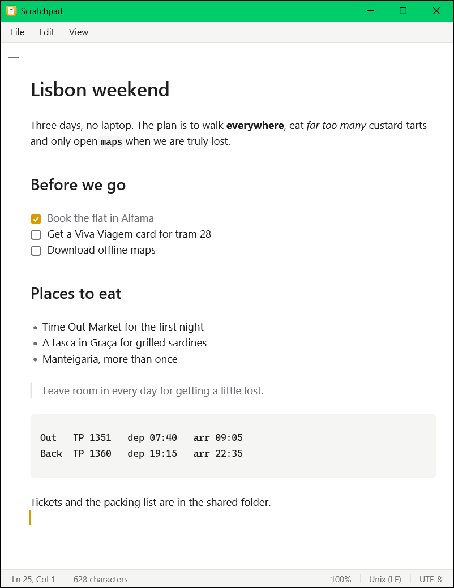

Notepad, with Markdown.
A fast, native Markdown scratchpad for Windows. Your notes are plain .md files in
a folder you own; headings, lists and links take shape as you type, and every note saves itself.

Everything you reach for in Notepad, and then some
Live preview
Headings, emphasis, lists, task boxes, links and code are styled as you write. Markdown markers show only where the caret is; Ctrl+/ shows them all.
Saves itself
Every note is saved a moment after you pause, at least every two seconds while you type, and whenever you switch notes or apps. Ctrl+S still works.
Crash recovery
Unsaved text is snapshotted while you type and offered back after a crash. If another program changes a note you are editing, you choose which version to keep.
Search every note
Ctrl+Shift+F searches the text of all your notes. A thousand notes take a few milliseconds once warm.
Find, replace, go to line
Ctrl+F and Ctrl+H in the note, with match case and replace all. Ctrl+G jumps to a line.
Notepad habits
File, Edit and View menus, a right-click menu with cut, copy, paste and formatting (Shift+F10 too), a status bar, word wrap with a horizontal scrollbar, pinned notes, zoom from 50% to 400%, a source mode, and the Windows editing keys you already know.
Opens any text file
Ctrl+O edits a file where it lives. .txt and other non-Markdown files open as plain text; Save As writes a copy and carries on there.
Markdown shortcuts
Bold, italic and links on Ctrl+B / I / K. Lists and quotes continue on Enter; Tab nests a list item. Type ~ over a selection to wrap it (twice for ~~strikethrough~~). A third backtick opens a code block and closes it for you.
Spell check
Windows' own spell checker draws a wavy line under misspelled words. Right-click for suggestions, Add to dictionary or Ignore; its autocorrect fixes "teh" as you finish the word. Code, links, web addresses and front matter are left alone.
Symbols as you type
-> becomes →, != ≠, -- —, ... … and more. Backspace right after brings back what you typed, and nothing changes inside code. Turn it off in the View menu.



Markdown from GitHub and Obsidian
Notes pasted from a README, a wiki or a vault look the way they did there. The file keeps exactly what you typed; only the way it is drawn changes.
Tables
GitHub tables are drawn as an aligned grid, with a bold header, column lines and each column aligned as its :--: row says. With the caret in a table it shows as typed, ready to edit. Tables over 500 lines, and grids wider than the window with word wrap on, stay as typed.
Callouts
GitHub alerts such as > [!NOTE], [!TIP] and [!WARNING] get a coloured bar and a label in place of the tag.
Wikilinks
[[Page]] and [[Page|label]] link to a note in the same folder. Ctrl+click opens it, or creates it if it is not there yet; links to missing pages are dimmer, with a dashed underline.
Links without the brackets
Bare https://, www. and e-mail addresses are links, and Ctrl+click opens them. Images look and open like links; nothing is downloaded.
Highlights, emoji and math
==text== gets a highlighter's background, and :smile: shows as 😄 until the caret touches it. Math between $ or $$ is set in its own font and colour, not typeset.
Markdown Extensions menu
View > Markdown Extensions switches each one and remembers it. Callouts, wikilinks, highlights and emoji are on; superscript (^x^), subscript (~x~), heading IDs ({#id}) and math start off. Tables and links are always on.
Your notes are just files
- Press Ctrl+N and type. The first line is the title and becomes the file name.
- Keep them anywhere. Notes live in
Documents\Scratchpadunless you pick another folder in Settings. - Edit them with anything. Git, a sync client or another editor can change them; Scratchpad reloads a note, and never silently overwrites changes it did not make.
- Delete without fear. Scratchpad asks first, then moves the note to the Recycle Bin.
Under the hood
- Native, no browser. Rust and GPUI, drawn on the GPU. An 8 MB executable and a 3 MB installer.
- Rope buffer. A keystroke in a 10 MB note takes microseconds, undo included.
- Incremental Markdown parsing. An edit re-parses only the blocks around it.
- Virtualised rendering. Only visible lines are laid out, so text appears about 4.5 ms after a keystroke (median), even in a 10 MB note.
- Atomic saves. Each save writes a temporary file, flushes it and renames it over the note, so a crash never leaves a half-written file.
- Tested and written down. Over 800 automated tests, including end-to-end tests that drive the real UI headlessly, and 75 decision records explaining why it works the way it does.
Get Scratchpad
Download the installer (Scratchpad-<version>-x64.msi) or the portable zip
(Scratchpad-<version>-x64-portable.zip) from the latest release, with
SHA256SUMS.txt to check them against.
# Or build and run from source
> git clone https://github.com/waterrmalann/scratchpad.git
> cd scratchpad
> cargo build --release -p scratchpad
> .\target\release\scratchpad.exe
# Or build the installer (needs the .NET SDK)
> powershell -File packaging/build-installer.ps1
Runs on Windows 10 or 11 (x64). The MSI installs for your user only, without administrator
rights, and uninstalling leaves your notes and settings alone. The portable zip holds
scratchpad.exe and its licence: unzip and run. Building needs the Rust toolchain (MSVC) and the Windows SDK.